WANG
WANGBiostate.AI
Translating complex biotech into a clear, investor-facing story.
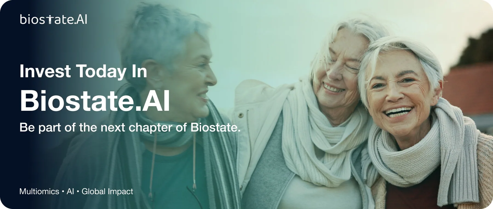
Science, shaped for communication.
A Wefunder fundraising pitch deck for Biostate.AI, bringing scientific information, sequencing technology, market context and investor messaging into a cohesive presentation system.
A consistent mint and deep-navy palette, modular layouts, and legible data visualizations help convey sophisticated information to different audiences.
The problem & market
Presenting the health challenge and the potential opportunity through a concise visual narrative.
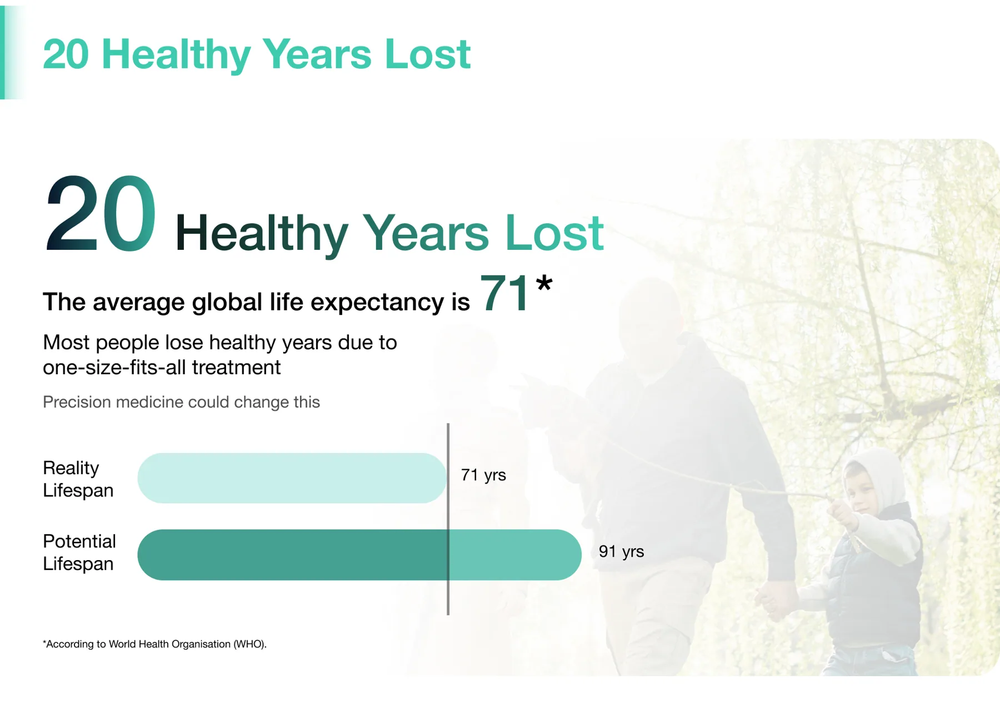
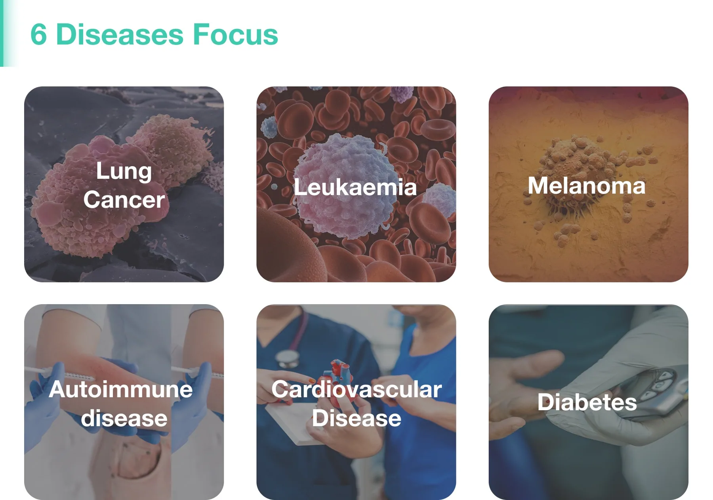
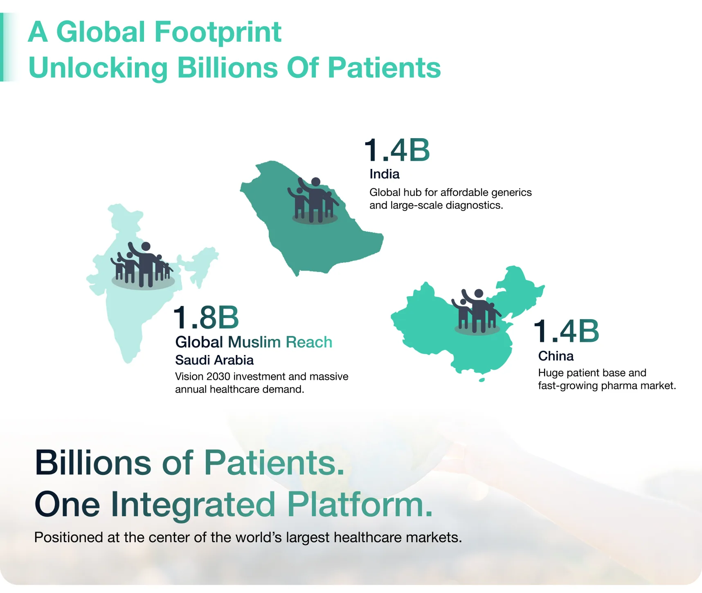
Explaining the science
Simplifying technical information with comparative charts, clear hierarchies, and modular benefit graphics.
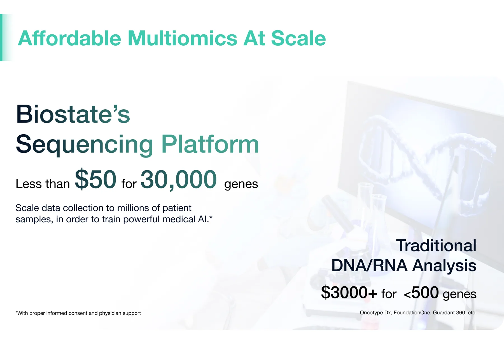
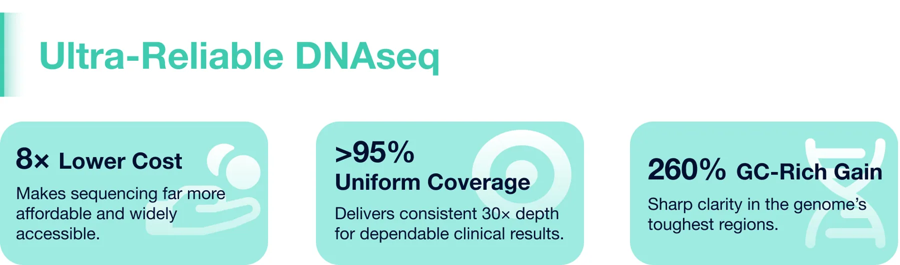
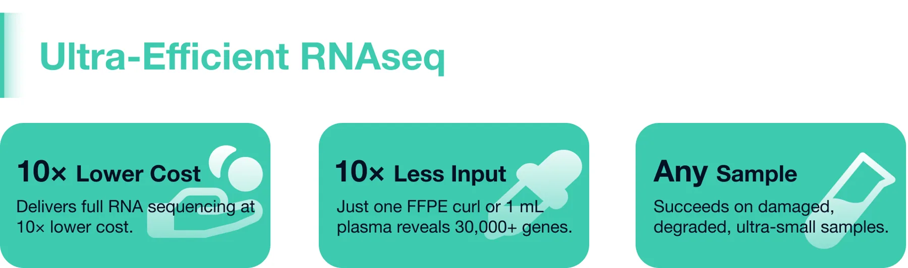
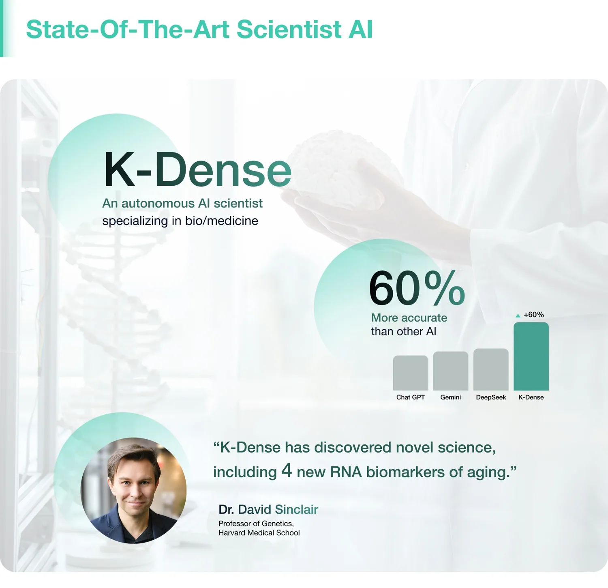
A visual argument
Building investor-facing communication across growth, investor introductions and financial projections.
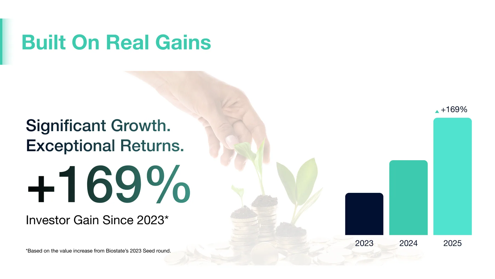
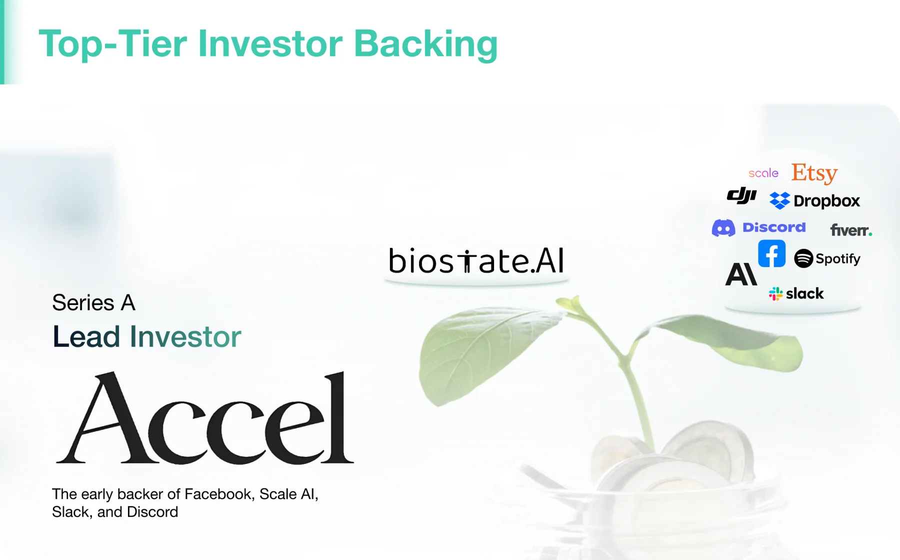
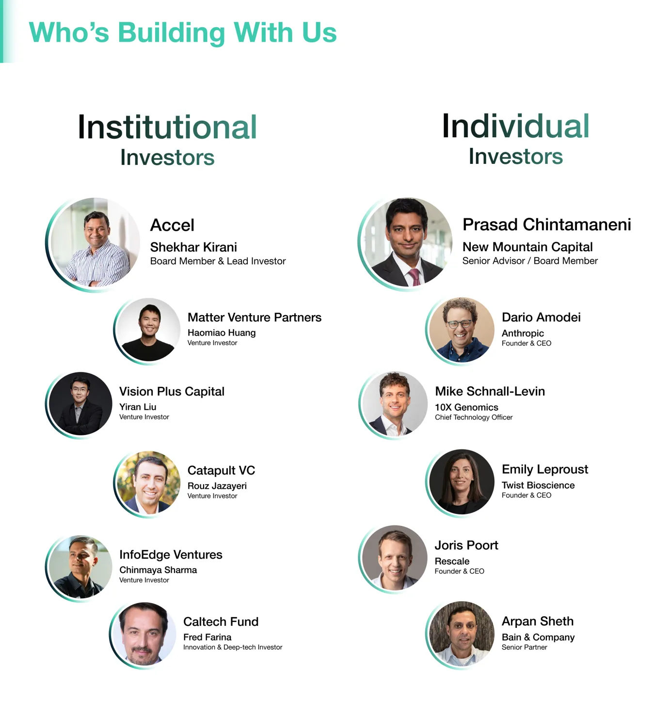
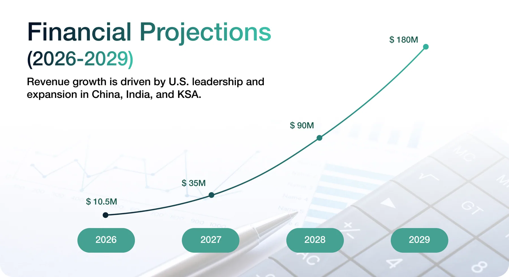
Meet PIO
A playful brand element provides a memorable close to a scientifically dense presentation.
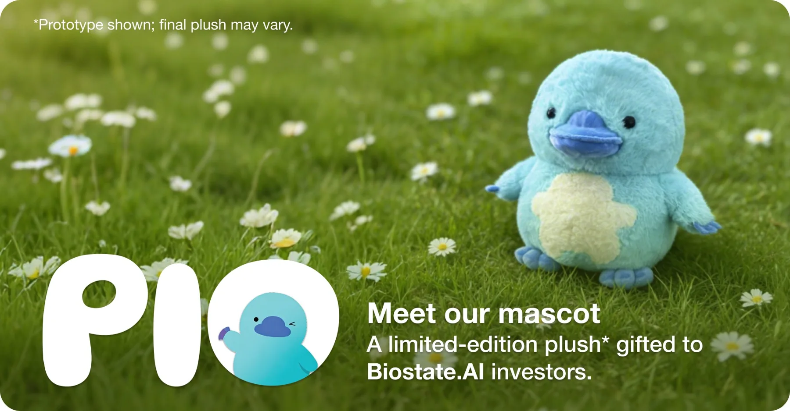
Slide imagery is presented as design work; financial, scientific, and other claims within the artwork have not been independently verified. Review publication permissions before sharing publicly.